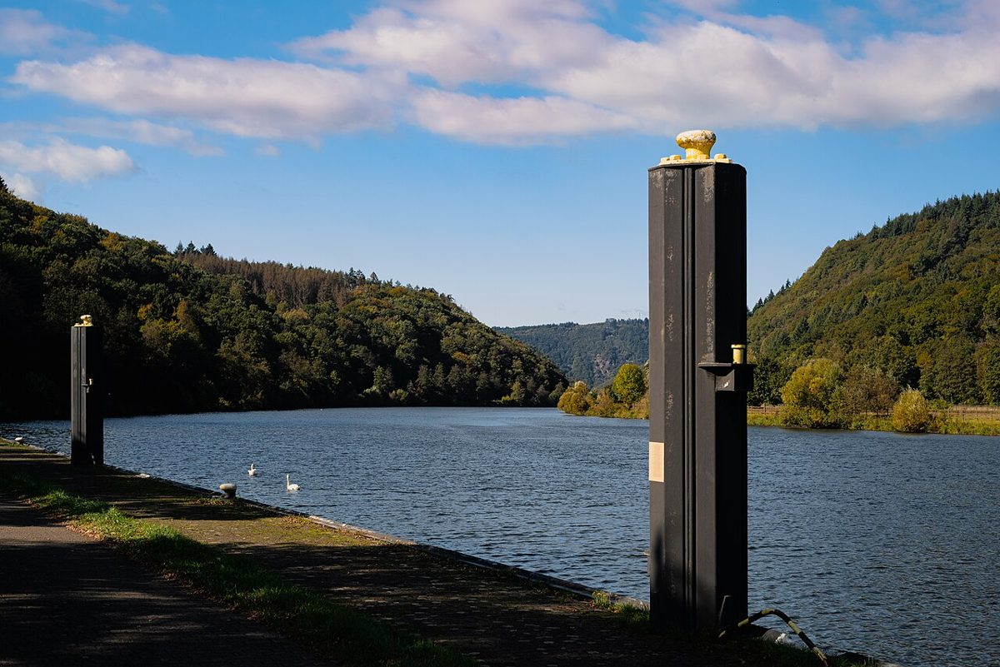

Die Saarschleife: Ein Naturwunder im Herzen des Saarlandes

Die Saarschleife im Saarland ist eines der beeindruckendsten Naturwunder Deutschlands. Dieser Flussbogen der Saar, der sich wie ein Schlangenwind durch die Landschaft schlängelt, bietet atemberaubende Aussichten und zahlreiche Möglichkeiten für Entdeckungen. Ob du Naturliebhaber, Wanderer oder einfach nur auf der Suche nach Ruhe bist – die Saarschleife hat für jeden etwas zu bieten.
Anreise zur Saarschleife
Die Saarschleife liegt im Nordwesten des Saarlandes und ist gut mit dem Auto erreichbar. Von Saarbrücken aus dauert die Fahrt etwa 30 Minuten. Auch mit öffentlichen Verkehrsmitteln ist die Region gut erschlossen, allerdings ist der Weg von der nächsten Bushaltestelle zur Aussichtsplattform oder zu den Wanderwegen etwas länger. Mit dem Fahrrad kannst du die Saarschleife ebenfalls erkunden – die Region bietet gut ausgeschilderte Radwege.
Beste Reisezeit
Die Saarschleife ist zu jeder Jahreszeit einen Besuch wert, aber besonders im Frühling und Herbst zeigt sie sich von ihrer schönsten Seite. Im Frühling erwacht die Natur zum Leben, und im Herbst verwandeln sich die Wälder rund um die Saarschleife in ein Meer aus goldenen und roten Farben. Im Sommer ist es hier oft voller, da viele Besucher die warmen Tage nutzen, um zu wandern oder ein Picknick zu genießen.
Highlights an der Saarschleife
- Aussichtsplattform Baumwipfelpfad: Ein Highlight ist der Baumwipfelpfad, der dich hoch über die Baumkronen führt. Von der Aussichtsplattform hast du einen atemberaubenden Blick auf den Flussbogen und die umliegende Landschaft.
- Wanderwege: Es gibt zahlreiche Wanderwege rund um die Saarschleife, die für jeden Fitnesslevel geeignet sind. Besonders beliebt ist der Saar-Hunsrück-Steig, der dich durch abwechslungsreiche Landschaften führt.
- Bootsfahrt auf der Saar: Eine Bootsfahrt auf der Saar bietet eine ganz andere Perspektive auf die Saarschleife. Genieße die Ruhe und die einzigartige Aussicht vom Wasser aus.
- Historische Stätten: In der Nähe der Saarschleife findest du Burgen und Ruinen, wie die Burg Montclair, die einen Einblick in die Geschichte der Region bieten.
Essen und Trinken
Im Saarland solltest du unbedingt die lokale Küche probieren. Ein Klassiker ist die „Dibbelabbes“, eine Art Kartoffelauflauf, der oft mit Speck oder Zwiebeln serviert wird. Auch „Lyoner“-Gerichte, wie Lyoner im Ring, sind typisch für die Region. Nach einem Tag voller Aktivitäten kannst du in einer der gemütlichen Gaststätten am Fluss ein Glas regionalen Wein oder ein kühles Bier genießen.
Fazit
Die Saarschleife ist ein wahres Juwel im Saarland und bietet eine perfekte Mischung aus Natur, Aktivität und Entspannung. Egal, ob du die Aussicht von der Baumwipfelplattform genießt, die Wanderwege erkundest oder einfach nur die Ruhe der Natur suchst – die Saarschleife wird dich begeistern. Plane deinen Besuch am besten in den ruhigeren Jahreszeiten, um die Schönheit der Landschaft ungestört zu erleben.
Haiktec
- 7 Erfolgsstrategien für kleine Restaurants und Cafés: Mehr Gäste, mehr Umsatz
- Schwarzwald-Reisekosten-Tracker & Aktivitäten-Planer für internationale Gäste
- Saarland & Mosel Entdecker: 7 Einfache Schritte zu Verborgenen Juwelen und Lokalen Geheimtipps
Text mit KI erstellt und automatisch geprueft.